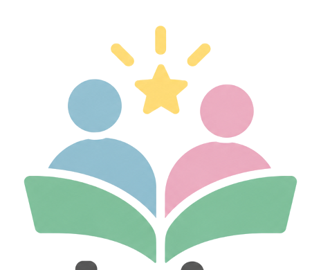
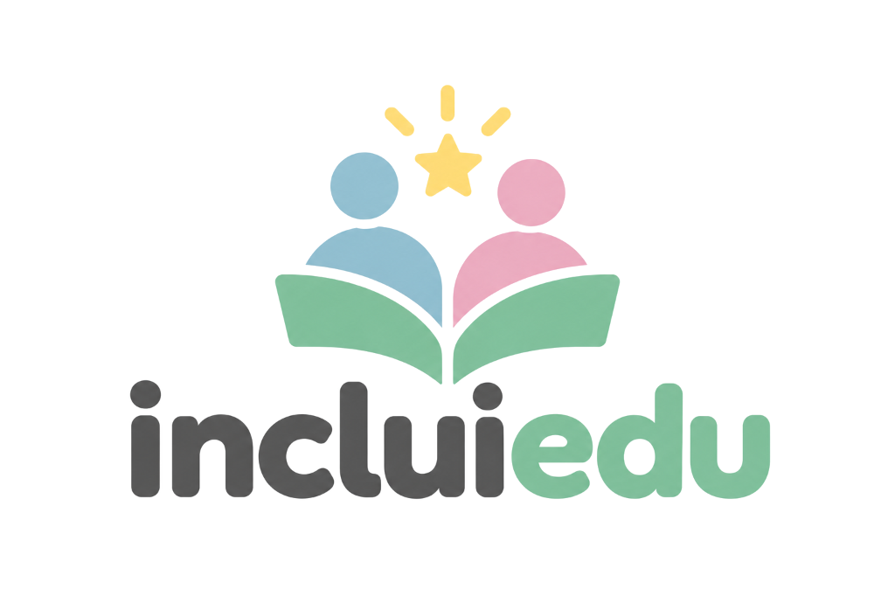

IncluiEdu — Apresentação de TCC
Trabalho de Conclusão de Curso (TCC)Conectando professores, estudantes com necessidades educacionais específicas e famílias por meio de tecnologia moderna e inteligência artificial adaptativa.
A rotina dos educadores enfrenta barreiras diárias para viabilizar um acompanhamento individualizado eficiente.
O Plano Educacional Individualizado (PEI) exige preenchimento constante de fichas físicas e relatórios dispersos, consumindo horas preciosas do educador.
Adaptar materiais pedagógicos para estudantes com TEA, TDAH ou deficiência intelectual exige criar exercícios sob medida do zero para cada nível cognitivo.
Os responsáveis muitas vezes não têm acesso ao progresso escolar diário, limitando a continuidade das intervenções pedagógicas no ambiente domiciliar.
Prover uma plataforma unificada e intuitiva que elimine o retrabalho dos professores, automatize a geração de atividades adaptadas via IA, centralize a separação e triagem de estudantes por status e aproxime os responsáveis da rotina pedagógica.
Experiência simplificada e segura com fluxos distintos para Professores e Responsáveis/Família.
Acesso instantâneo ao status de cada estudante com filtros dinâmicos e métricas em tempo real.
Centralização do dossiê pedagógico de cada estudante com ações rápidas em um clique.
EDU-784) para que a família vincule a conta do filho no portal domiciliar.
Como a inteligência artificial generativa transforma horas de trabalho manual em minutos de alta precisão pedagógica.
Educadores inclusivos costumam passar noites elaborando adaptações visuais e textuais para que estudantes com NEE consigam acompanhar o conteúdo regular. O IncluiEdu resolve essa dor com tecnologia de ponta.
Ambiente seguro e intuitivo para os pais acompanharem tarefas e a evolução do aluno.
Duas implementações complementares garantindo versatilidade, velocidade e robustez.
backend/telas/.A escolha consciente da paleta pastel oficial para ambientes educacionais inclusivos.
Transmite calma, crescimento e sucesso pedagógico. Empregado em botões primários e no status 'Evoluindo'.
Tom amigável para alertas e observação contínua. Empregado no status 'Acompanhar' e convites familiares.
Destaque visual sem criar ansiedade ou sensação punitiva. Utilizado no status 'Atenção Pedagógica'.
Serenidade e clareza. Usado na linha do tempo, cabeçalhos de atividades e botões secundários.
Suporte e harmonia visual para bordas, divisores e ícones complementares.
O projeto entrega uma solução completa, com código-fonte organizado, manual técnico de navegação no VS Code e aplicação publicada em produção pronta para avaliação pela banca.
Economia de tempo docente na formulação e impressão de atividades adaptadas com IA.
Separação visual dos alunos por status pedagógico para priorização das intervenções.
Engajamento dos responsáveis no processo inclusivo de forma simples e segura.